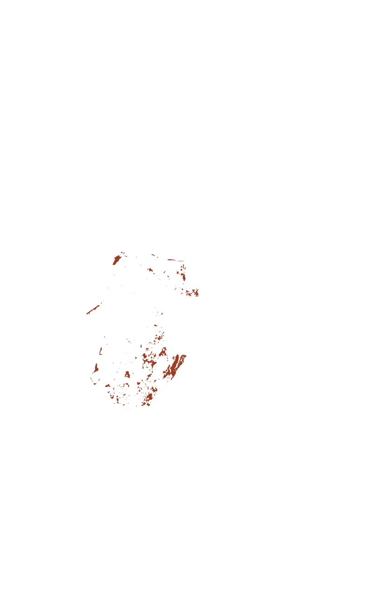
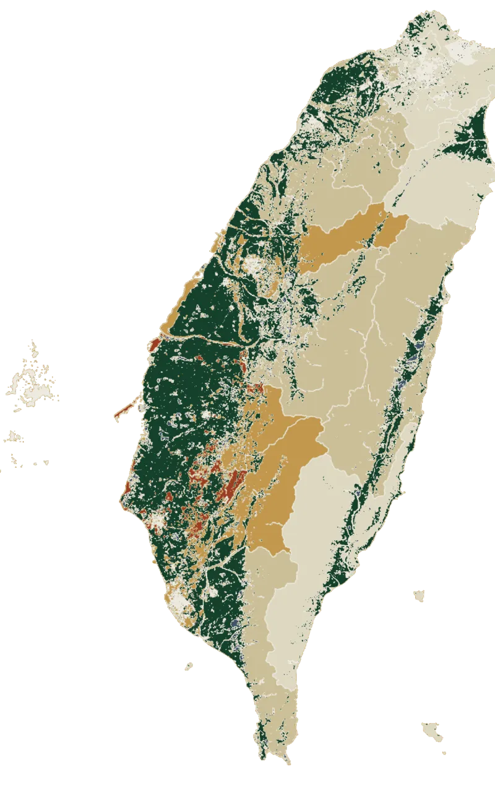

01The threat, and who it lands on
The weather swings hardest where the farms are smallest.
Taiwan has warmed 0.29 °C per decade since 1991, nearly three times the rate before it. We built one climate volatility index from the day–night swing, the seasonal swing and how unevenly the rain falls, then laid every farm parcel on the main island over it.





- 97%
- of the farmland on the map is in parcels under two hectares. On the ground that swings hardest it is 99.8%.
- 26.7 °C
- Kaohsiung’s average July night, already inside the 25–33 °C band that damages rice at grain-setting.
- 63.5
- the average Taiwanese farmer’s age. More than half are over 65.
- 0.9–1.1 ha
- what most farm households work. There is no other kind of farmer to build for.
No instrument on the small farm
Ms. Chen lays dried weeds over her soil before a dry spell, so the morning dew soaks in slowly. That buys about three weeks before she has to check again, a clock built from twenty-five years on one plot. Nothing on her farm measures stress; she reads it.
Flash droughts are now arriving faster: nearly half develop inside five days. A three-week clock does not have to break for the crop to be lost. It only has to run slow once.
So protection has to arrive
- On demandwhen this week’s weather calls for it, not when the order ships
- At the right timebefore the plant shows the damage
- In the right amountmatched to one small field, not an average one